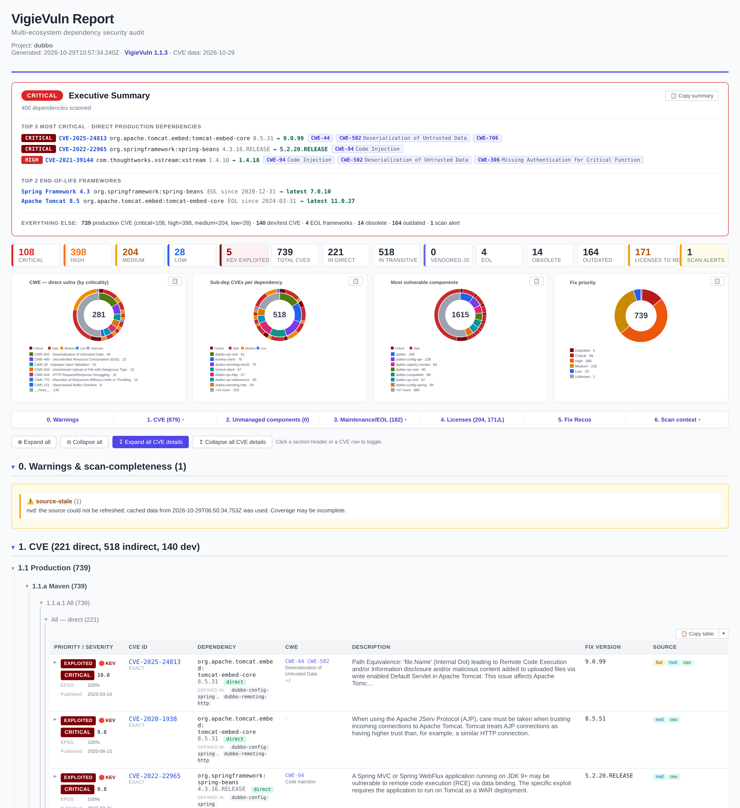
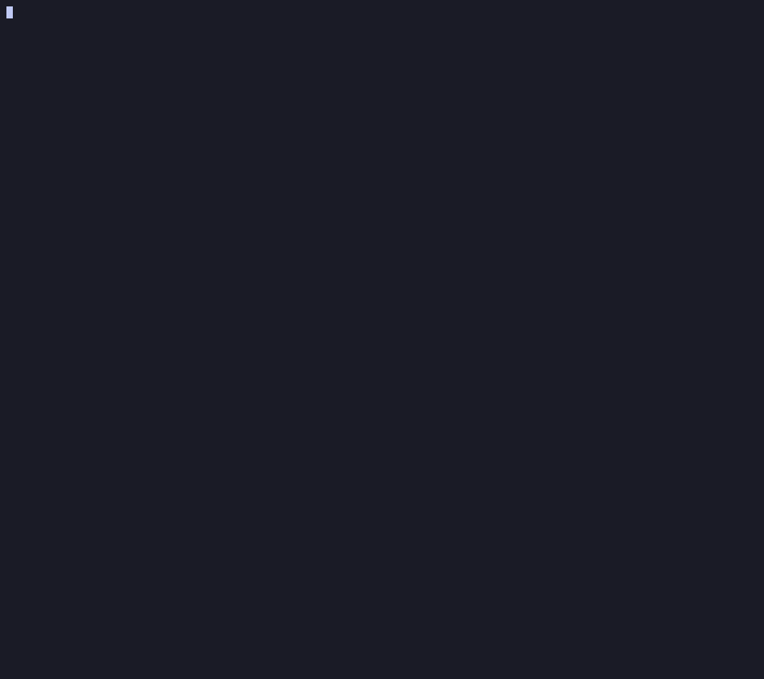

Audit every
dependency.No build. No leaks.
A polyglot CVE · EOL · outdated · license scanner that reads your source tree directly — no mvn, no npm install, no Docker. Findings merged from CVEProject, OSV, Packagist, NVD & retire.js, prioritised with EPSS + CISA KEV, an audit-ready HTML + findings JSON report with optional Word, CycloneDX SBOM and CSAF VEX, and an air-gapped mode for confidential code.
$ vigievuln -s test/fixtures/monorepo-mixed \
--offline --no-report
VigieVuln v1.0.1 · Autonomous Dependency Checker
▸ Collection
✓ Maven 4 module(s) · 7 direct dep(s)
✓ npm/yarn 9 dep(s)
✓ Yarn 7 dep(s)
…
▸ Vulnerability database update
· --offline: cached data only, no network
…
▸ Results
CVE · production (135) 12 critical 66 high 50 medium 7 low 2 KEV
CRITICAL CVE-2021-44228 log4j-core:2.14.0 KEV
…
⚠ Offline OSV cache incomplete: 10 lookups unavailable.
· --no-report: no files written (scan + gate only)
$ Real scan · excerptSample reports ↗
- CVE, EOL & advisoriesMultiple sources, one view
- Multi-ecosystem10 ecosystems · 9 CMS
- Fast & zero buildNo install, no Docker
- Air-gapped readyOffline, with warmed caches
- Audit-ready reportsHTML, JSON, Word, SBOM, VEX
Your next audit starts here.
Install once. Point it at a checkout. Get the full picture.
npm i -g vigievuln && vigievuln scan ./codenpm package ↗Node.js 20+Standalone binaries ↗
Ten ecosystems + 9 CMS/frameworks + vendored JS + embedded JARs + native binaries
Point it at any checkout — multi-module, monorepo, polyglot. It parses manifests and lockfiles directly, and falls back to best-effort (pinned versions) when there's no lockfile.
Built for audits, not just CI
No build, polyglot
Read manifests and lockfiles across ten ecosystems, without installing or executing project code. Resolve Maven modules individually and inspect embedded JARs, WARs and EARs.
Merged sources, fewer false positives
CVEProject, OSV, Packagist, NVD and retire.js findings are merged and deduplicated. Version and CPE checks help reduce false positives.
Risk-based priority
See what needs attention first. CISA KEV highlights known exploitation, while EPSS adds exploit probability alongside CVSS severity.
Beyond CVEs
Spot end-of-life frameworks, deprecated or abandoned packages, outdated versions and license obligations. Trace each verdict to its evidence.
Report made for productivity
Share a self-contained HTML report, export to Word, or copy individual tables and charts with formatting. Reports are available in English and French.
Exports & CI gating
Export JSON, Excel, SARIF, CycloneDX SBOM and CSAF VEX. Compare with a baseline and gate CI on new findings, severity or known exploitation.
Air-gapped
No network requests under --offline. Transfer warmed caches into the secure environment and audit locally. See the workflow.
Audit-grade
A provenance manifest, source freshness, explicit coverage limits and artifact checksums make the result easier to review and reproduce.
Certificates & keys
Inventory committed certificates, public and private keys, and keystores. Flag expiry, weak keys and signatures using offline parsing.
CMS & frameworks audited as instances
Inventory nine CMS and frameworks as applications, with component ownership and explicit advisory coverage. Explore supported applications.
Shared cache for a scanner fleet
Use the CLI’s serve-cache and --proxy-cache to share public provider responses across scanners. Cache configuration.
Vigie Vuln DB · hosted in Europe
Vigie Vuln DB hosts vulnerability data and the official proxy cache in Europe.
Supply-chain risk
Flag advisories on known-malicious packages and optionally surface suspected typosquats. Malicious findings block the CI gate regardless of severity.
European vulnerability references
Add ENISA EUVD, GCVE and CERT-FR context to matched CVEs. References travel with the report and exports, and cached data remains usable offline. Explore the data sources.
Inventoried as instances, not just lockfiles
A WordPress or Drupal site isn't a directory of lockfiles — it's a product with a version, plugins, themes and framework components. VigieVuln inventories the instance: core and component versions read from the tree's own markers, every dependency CVE attributed to the component that ships it, each instance reported in its own sub-chapter — synthesis included even when it comes out clean — and private/custom components kept separate, never sent to any publisher. Activated by the default --app-plugins auto.
| Product | Inventory | Advisory lane |
|---|---|---|
| WordPress | core, plugins (public/private), themes | Wordfence production feed (API key) + core checksums integrity (api.wordpress.org) |
| Drupal | core, modules (modules/contrib), themes, profiles, D7 branch | packages.drupal.org per-package security advisories |
| Symfony | framework, components, bundles, libraries, Flex recipes | the dependency lanes (OSV + Packagist + NVD) — no publisher feed exists, and the coverage says so |
| Laravel | framework, bundles, libraries | the dependency lanes (OSV + Packagist + NVD) |
| PrestaShop | core, modules, themes | the publisher's GitHub security-advisories feed |
| TYPO3 | core, extensions | the publisher's GitHub security-advisories feed |
| SPIP | core, dist plugins (paquet.xml), user plugins (+ legacy plugin.xml) | NVD product CVEs (cpe:2.3:a:spip:spip) — the only machine-readable SPIP source; plugins stay honestly not-qualified |
| Joomla / Magento | core, extensions, themes | honestly not qualified — no machine-readable feed exists; the report never implies coverage it doesn't have |
Every advisory snapshot a live lane fetches is stamped and cached, carried by --export-cache / --import-cache, warmed from the air-gapped descriptor itself by --import-anonymized and reused automatically offline — the Wordfence API key never travels to the enclave. Full reference in docs/CMS-FRAMEWORKS.md.
Why use VigieVuln for code audits?
What it does for an audit that the others don't. Same column set and sourcing discipline as COMPARISON.md — an amber cell is partial and says how, and every cell is meant to be checkable.
| What an auditor actually needs to do | VigieVuln | OSV-Scanner | Trivy | Grype+Syft | OWASP DC | Snyk OSS |
|---|---|---|---|---|---|---|
| Audit a 100-module polyglot monorepo in one command, with no toolchain installed 1 | ✓ 105 modules | reactor skipped | needs ~/.m2 | opt-in | Java build | mvn build |
| Scan offline / air-gapped without dropping transitive deps 2 | ✓ 705/705 | ✗ | ~/.m2 | opt-in | mirror | ✗ |
| Identify the private/internal deps across a big project 3 | ✓ | ✗ | ✗ | ✗ | ✗ | ✗ |
| Extract cleaned deps descriptors into an external directory 4 | ✓ -t | ✗ | ✗ | ✗ | ✗ | ✗ |
| Report EOL / deprecated frameworks & deps, transitive ones included 5 | ✓ | deprecated only | OS distros only | ✗ | ✗ | web UI only |
| Report committed keys & certificates 6 | ✓ | ✗ | key rule | ✗ | ✗ | ✗ |
| Spot committed binaries (.dll, .exe, …) and check them against their checksums 7 | ✓ | ✗ | some | patterns | ✗ | ✗ |
| Clearly list what was not scanned — before the client asks 8 | ✓ warnings + method | log | log | log | log | log |
| Answer “against what data?” six months later 9 | ✓ | ✗ | ✗ | DB date | NVD date | ✗ |
| Send a report, not a JSON dump 10 | ✓ HTML + .doc | HTML list | template | ✗ | HTML list | snyk-to-html |
| Charts, per-CVE drill-down and a pasteable Word copy 11 | ✓ | ✗ | ✗ | ✗ | ✗ | ✗ |
| Make delta reports showing only what changed 12 | ✓ --baseline | ✗ | ✗ | ✗ | ✗ | cloud |
| Audit CMS/framework instances as such — plugins, themes, publisher advisories 13 | ✓ 9 products | ✗ | ✗ | ✗ | ✗ | ✗ |
| Share one cache across the fleet, API keys server-side 14 | ✓ serve-cache | ✗ | local DB | local DB | local DB | cloud |
- No mvn/go/npm/pip/dotnet — manifests parsed off disk, nothing installed or executed. 105 × pom.xml in one pass, with versions mediated per module. The 2026-10-02 re-measurement recorded 834 pairs, including 705/705 OSV-Scanner pairs; see the benchmark for scope and historical comparisons.
- 705 of 705 of OSV-Scanner's online Maven result in the 2026-10-02 re-measurement, under unshare -rn — no network interface. Tripwire-tested; only public coordinates ever leave the enclave.
- Chapter 0 names every coordinate that every configured registry answered 404 for — Maven, npm, PyPI, NuGet, Composer, Go and RubyGems — with the manifest(s) declaring it. A registry that timed out is never counted. -e <regex> then excludes them.
- -t <dir>: normalised POMs plus every non-Maven lockfile mirrored, private coordinates stripped. Archivable, and scannable by anything — --snyk included.
- endoflife.date, split direct vs transitive so you know which dep to bump, plus deprecated / abandoned / yanked and outdated. Trivy covers OS distros only; Snyk's package health is web-only.
- Inventory and verdicts: expiry, RSA<2048, MD5/SHA1, self-signed; private vs public keys; JKS/PKCS#12. Offline parser. Trivy's secret rule finds the file, not the flaw.
- Identified by hash via deps.dev + CIRCL → should-be-declared / name≠checksum / unknown / malicious. Syft's patterns name a version, not an identity.
- Chapter 0 flags what this scan could not reach (missing lockfiles, unresolved versions, incomplete application checks); Methodology states what the tool never assesses. Elsewhere the first is a log line the audit never sees, the second isn't written down.
- Provenance manifest: tool, runtime, mode, run configuration and cache freshness for each consulted source. Grype and Dependency-Check carry one source's date, not the run.
- Chapters 0→6 with an executive summary and fix recipes, self-contained HTML + findings JSON by default, with optional Word .doc. None of the others emits Word.
- Four inline-SVG charts — CWE by worst severity, vulnerable transitives per root dep, your most vulnerable modules, fix-priority bands — rendered in the .doc too, with one-click copy as PNG (or a table as rich HTML) that pastes into Word formatted. Every CVE keeps its CVSS vector, CWE, references, CPE config and via-path behind a drill-down, with zero external assets.
- --baseline adds a Δ chapter (new / fixed / unchanged); --fail-on-new gates on new findings only. Snyk tracks this on its platform, not as a local diff.
- Symfony, Laravel, WordPress, Drupal, Joomla, PrestaShop, TYPO3, Magento/Adobe Commerce and SPIP inventoried per instance — core, plugins, themes, bundles, components, with direct/indirect attribution, publisher advisory feeds where they exist (Wordfence, packages.drupal.org, PrestaShop/TYPO3 GitHub) and WordPress core checksums. The others read lockfiles; none of them has a CMS-instance view. → the dedicated section
- vigievuln serve-cache + --proxy-cache: one upstream call per provider resource per TTL for the whole fleet, single-flight coalescing, stale-if-error, and NVD/Wordfence/GitHub keys held by the server — use --wordfence-live to activate Wordfence with a server key. Trivy/Grype/DC cache a local DB; Snyk's lives on its platform.
Where it loses — containers/OS packages, auto-fix PRs, and CVE
coverage against Snyk's curated feed: the gap, measured.
Deliberately not a goal — reachability. A finding is a vulnerable version on the
dependency graph, and the report says exactly that in Methodology instead of guessing at call
paths. Whether the vulnerable code is reachable in this application is the auditor's
call, made with application context no scanner has.
Watch your direct dependencies.
The free tier watches one project, up to 100 direct dependencies and a 0.5 MB descriptor, for one month renewed by each upload; expiry deletes the monitoring data and triggers an email.
Sign in and watch
Create and verify your Vigie Vuln account, explicitly accept the terms of service dated 2026-10-28, then register your project. Enable alerts in your account for new high or critical vulnerabilities (CVSS ≥ 7) and known exploited vulnerabilities affecting direct dependencies.
vigievuln login vigievuln whoami vigievuln watch ./project --name 'My Project' vigievuln project status vigievuln logout
watch collects locally and uploads once; it is not a background watcher. Repeat it with the same unique project name to update the inventory. The first inventory establishes a silent baseline.
If the current terms are pending, the CLI displays their link and asks for explicit acceptance. Non-interactive use never accepts them automatically: run vigievuln login interactively first.
Review an offline export
vigievuln watch ./project --export fichier.json
--export writes an offline descriptor without uploading; review package names and versions, including private packages, before sharing it.
Upload the reviewed file explicitly with vigievuln project push --file fichier.json --name 'My Project' after signing in.
Existing commands remain supported: vigievuln -s ./code, auth login|status|logout, --prepare-project and project push. Monitoring guide and update workflow ↗.
An executive summary, then the detail
Severity tiles, an application-first CVE chapter when relevant, and a CVE table with a priority column (KEV / EPSS), CWE & fix versions, EOL / obsolete / outdated / license chapters, and a "likely false positives" appendix — all in a single file you can email.

Actual scans generated with VigieVuln 1.1.3 on 2026-10-29. These are dated snapshots, not live security assessments. The CMS sample has incomplete WordPress advisory coverage; each report retains its cache gaps and limitations. Sample scope and reproduction.
Scan online. Never expose the code.
The vuln databases need the network; your client's code does not. The scan splits in three — only public coordinates ever leave the secure machine. Caches are keyed by coordinate, so warming them online and replaying offline just yields cache hits.
Designed for any air-gapped / confidential review. The online box only ever sees lodash@4.17.21 — never your repository.
# 1 — OFFLINE (audited machine): export anonymized descriptor vigievuln -s ./proj -e "^(client|internal)\." --export-anonymized deps.json # 2 — ONLINE (any box, no source): warm the caches vigievuln --import-anonymized deps.json vigievuln --export-cache fad-cache.tar.gz # 3 — OFFLINE again: full report, real paths vigievuln --import-cache fad-cache.tar.gz vigievuln -s ./proj --offline
Where it fits
Not a Trivy/Grype replacement — those own containers and continuous CI. VigieVuln owns the zero-setup source audit with an air-gapped story (and now emits SBOM/VEX, flags licenses and prioritises by EPSS/KEV too).
| Capability | VigieVuln | OSV-Scanner | Trivy | Grype+Syft | OWASP DC | Snyk OSS |
|---|---|---|---|---|---|---|
| Reads lockfiles without build | ✓ | ✓ | ✓ | ✓ | ~Java | ~Maven/pip build |
| Best-effort without a lockfile | ✓ | ~ | ✗ | ✗ | ~ | ~ |
| EOL detection | ✓ | ✗ | ✗ | ✗ | ✗ | ~ |
| Outdated / deprecated | ✓ | ~exp. | ✗ | ✗ | ✗ | ~ |
| EPSS / KEV prioritization | ✓ | ✗ | ✗ | ✓ | KEV | ~web |
| License compliance | ✓ | ✓ | ✓ | ~ | ~ | ✓ paid |
| SBOM / VEX export | ✓ CDX+CSAF | ✓ | ✓ | ✓ | ~ | ✓ Enterprise |
| HTML + optional Word report | ✓ | HTML; no Word | templates | templates | html | cloud |
| Air-gapped, code never exposed | ✓ | ✗ | ✗ | ✗ | ✗ | ✗ |
| Containers / OS packages | ✗ | ✓ | ✓ | ✓ | ✗ | ✓ |
² For pom.xml, transitives need Maven Central once — after that VigieVuln resolves the graph from its cached POMs, which is what makes the air-gapped run work. Snyk needs a real build, Trivy needs the network or a populated ~/.m2. Reach for Trivy or Grype+Syft for continuous CI, containers and SBOM pipelines.
³ EOL row is scoped to application frameworks and libraries. Trivy does compute an end-of-service-life status, but only for OS distributions. Snyk's package-health signal exists on its website, not in the CLI or CI output. Cells re-verified against upstream docs on 2026-09-14 (OSV-Scanner 2.6.0, Trivy 0.74.0, Grype 0.118.0 + Syft 1.51.1, Dependency-Check 13.0.0, Snyk CLI 1.1307.2) — detail and sources in COMPARISON.md.
Benchmark: Apache Dubbo 2.7.8
Five scanners, one public 105-module Maven reactor pinned to a commit, two questions. Every number below is recomputable from the tools' own JSON — the commands are in the benchmark doc.
Latest documented re-measurement · 2026-10-02
After Maven resolution and version-ordering fixes: 834 pairs, including 705/705 of OSV-Scanner's online pairs, recovered both online and under unshare -rn --offline. Method and changes.
The tables below preserve the earlier five-scanner comparison, measured with the predecessor fad-checker 2.4.6 and the tool versions shown. They are historical results, separate from the current sample reports above; the full comparison has not been rerun for this release.
1 · At full capability · historical comparison
Every scanner online, best configuration, populated ~/.m2. Union of all findings: 908 pairs.
| Scanner | Found | Unique to it | Not reported |
|---|---|---|---|
| VigieVuln | 790 · 87.0% | 125 | 118 → 0 real |
| OSV-Scanner 2.4.0 | 657 · 72.4% | 0 | 251 |
| Snyk 1.1302.1 (mvn build) | 603 · 66.4% | 117 | 305 |
| Trivy 0.72.0 | 546 · 60.1% | 0 | 362 |
| Grype 0.116.0 + Syft 1.49.0 | 45 · 5.0% | 0 | 863 |
“Not reported” is union arithmetic, not a verified recall gap. It counts pairs another tool produced and this one did not — a miss only if the public record actually binds that vulnerability to that coordinate and version. For VigieVuln that was checked pair by pair: 0 are recall bugs. The other rows have not been adjudicated, so read their column the same way. Trivy and Grype are container/SBOM scanners; a raw source checkout is not the job they are built for.
2 · With no network at all · historical comparison
Same tree, every scanner under unshare -rn — a namespace with no network interface, not just an offline flag. Reference: OSV-Scanner's own online output, 657 pairs.
| Scanner, no network | Recovers |
|---|---|
| VigieVuln --offline | 657 · 100% |
| Grype + Syft | 45 · 6.8% |
| Trivy --offline-scan, cold ~/.m2 | 40 · 6.1% |
| OSV-Scanner --offline | 37 · 5.6% |
100% here means "recovers everything OSV-Scanner finds with network access", not "finds everything that exists" — table 1 is the answer to that. OSV-Scanner returns the identical 37 with and without the namespace: it behaves exactly as documented, its transitive resolution is disabled offline by design.
3 · Every other ecosystem
VigieVuln claims ten ecosystems, and benchmarking one of them is not an answer. Same method on five more public projects, findings normalised to (package@version | CVE). Expect parity — that is the point. Outside Maven the transitive graph is already in the lockfile, so no scanner has a structural advantage and none should.
| Scanner | Pairs |
|---|---|
| OSV-Scanner | 657 |
| VigieVuln | 790 |
| Shared | 657 |
| VigieVuln only | 133 |
| OSV only | 0 |
The one ecosystem where the graph is not in the tree: it must be resolved from the registry. That is why an offline gap exists here and nowhere else.
| Scanner | Pairs |
|---|---|
| OSV-Scanner | 274 |
| VigieVuln | 274 |
| Shared | 274 |
| VigieVuln only | 0 |
| OSV only | 0 |
Identical sets, not merely equal counts. Both tools read the same lockfile, so parity is the correct outcome.
| Scanner | Pairs |
|---|---|
| OSV-Scanner | 150 |
| VigieVuln | 150 |
| Shared | 150 |
| VigieVuln only | 0 |
| OSV only | 0 |
Identical sets. VigieVuln additionally reports 1 120 outdated gems and 58 deprecated — a different question, not a better score on the same one.
| Scanner | Pairs |
|---|---|
| OSV-Scanner | 34* |
| VigieVuln | 34 |
| Shared | 34 |
| VigieVuln only | 0 |
| OSV only | 0 |
* OSV-Scanner needed --no-ignore: phpMyAdmin gitignores composer.lock although it is committed, and OSV honours .gitignore, so its recursive scan reported 0. VigieVuln scans what is on disk, which for an audit is the right answer.
| Scanner | Pairs |
|---|---|
| OSV-Scanner | 113 |
| VigieVuln | 110 |
| Shared | 110 |
| VigieVuln only | 0 |
| OSV only | 3 |
go.sum is not the build graph: it also records modules that version selection merely weighed. Only those carrying a module zip hash are actually built, and only those are scanned — 187 of 578 on this project. The 3 remaining differences are version selection on x/sys and yaml.v2.
| Scanner | Pairs |
|---|---|
| OSV-Scanner | 83 |
| VigieVuln | 79 |
| Shared | 79 |
| VigieVuln only | 0 |
| OSV only | 4 |
The 4 are all setuptools@9.1.0, which OSV picked up from a test fixture inside poetry's own test suite. VigieVuln reads poetry.lock, which is authoritative.
Equal CVE counts do not make two tools equivalent: on these same projects VigieVuln also reported 1 120 outdated dependencies on mastodon, 618 and 2 EOL frameworks on phpMyAdmin, 65 on poetry — questions OSV-Scanner does not attempt. Full per-ecosystem detail, targets and method → BENCHMARK.md.
4 · The Snyk delta, explained
131 pairs came back from Snyk and not from VigieVuln. Adjudicated one by one against OSV, none is a recall bug. Here is what they actually are.
01It is one commercial database, not the field
Every such pair is Snyk's. OSV-Scanner, Trivy and Grype+Syft each found 0 pairs nobody else had, so this was never “VigieVuln is behind the other scanners” — it is every public advisory source, aggregated, against one hand-curated commercial feed.
02It is a Maven/Java phenomenon
The delta was measured on the Maven target. Outside Maven the resolved graph is already in the lockfile, every scanner reads the same input, and the per-ecosystem tables above measure identical finding sets on npm, RubyGems and Composer. There is no equivalent gap there to explain.
03Two thirds contradict the public record
57 name a coordinate the advisory does not bind, 31 a version outside every declared affected range. Reporting them would mean shipping false positives — which is why every claimed miss is adjudicated before it becomes a ticket.
04The verdicts, against OSV
57 wrong artifact · 31 out of range · 23 not in OSV (19 proprietary SNYK-*, 4 NVD-only) · 19 no Maven binding · 1 already reported under the CVE alias · 0 confirmed. Under NVD's looser CPE ranges 5 would be reported — named, with the tension that creates, in BENCHMARK.md.
05The clean example
CVE-2023-6481 is claimed on logback-classic@1.2.2. It binds logback-core at [1.2.12, 1.2.13) — wrong artifact, and a version published before the flaw existed. GHSA-72hv-8253-57qq is claimed on jackson-core@2.10.4, whose ranges start at 2.15.0.
06Closing it from public data was tried, and failed
--nvd-cpe-match uses NVD's broader CPE ranges to match rather than only to filter. Measured: 76 new findings, 12% corroborated. CPE names frameworks (netty, spring_framework) while Maven names artifacts, so a spring-web flaw lands on spring-core, spring-beans and spring-context alike. It ships as a triage aid with its 12% stated in its own help text.
Which is why --snyk exists
Rather than pick a side, VigieVuln takes snyk test output as an input and merges it: union beats either tool alone, and the merge is one flag. On a tree with private modules, extract it with -t first — the normalised descriptors it writes have those coordinates stripped, so Snyk gets something it can actually resolve. Merging it is a coverage choice, not a correction: two thirds of what Snyk adds on its own contradicts the public record. The per-pair adjudication is in BENCHMARK.md.
# strip private modules, scan, merge Snyk vigievuln -s ./proj -t ../clean -e "^client\." --snyk
Full method, per-tool configuration, the four bugs this benchmark found in VigieVuln, and every caveat → BENCHMARK.md.
Everything is documented
Per-flag usage, internals, and the full source — all in the repo.
Watch the actual CLI terminal demo

VigieVuln is a young project. Use its findings as a first pass, verify critical decisions, and report issues so the scanner keeps improving.
# read-only full scan (default: all sources on) vigievuln -s ./proj # pick ecosystems · go fully offline · skip the Maven Central queries vigievuln -s . --ecosystem maven,npm,pypi vigievuln -s . --offline # extract only: normalised descriptors + private modules identified vigievuln -s ./proj -t ../clean -e "^client\." # …and the same run, with a scan + Snyk merged in vigievuln -s ./proj -t ../clean -e "^client\." --snyk